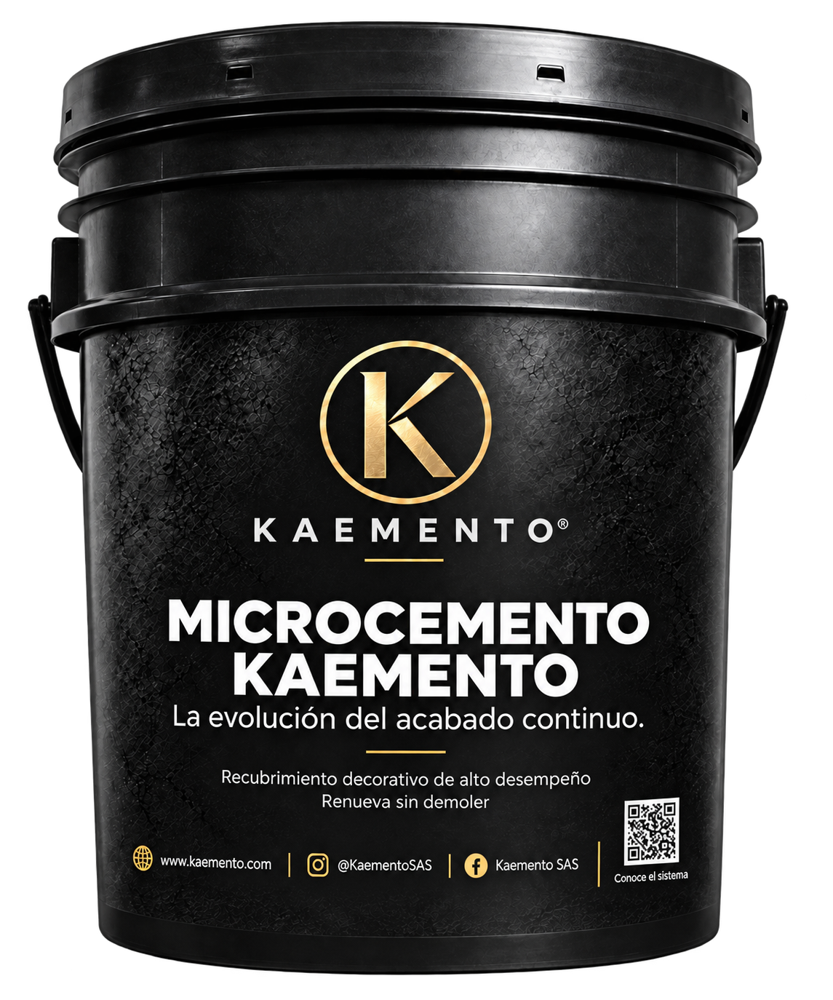
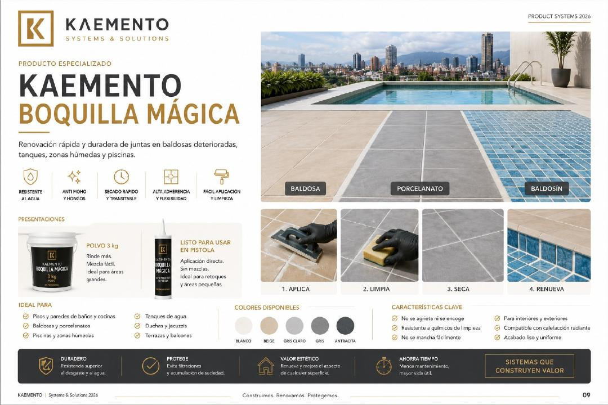
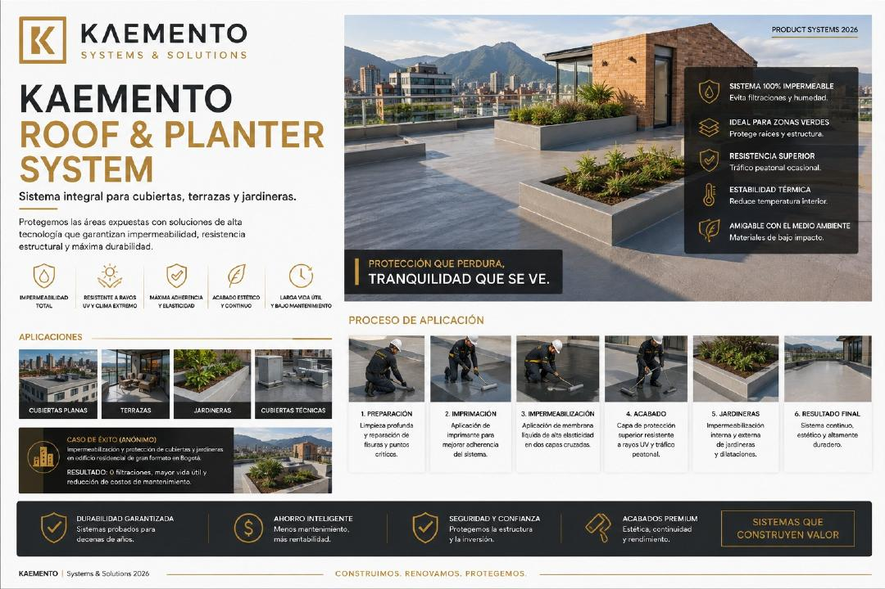
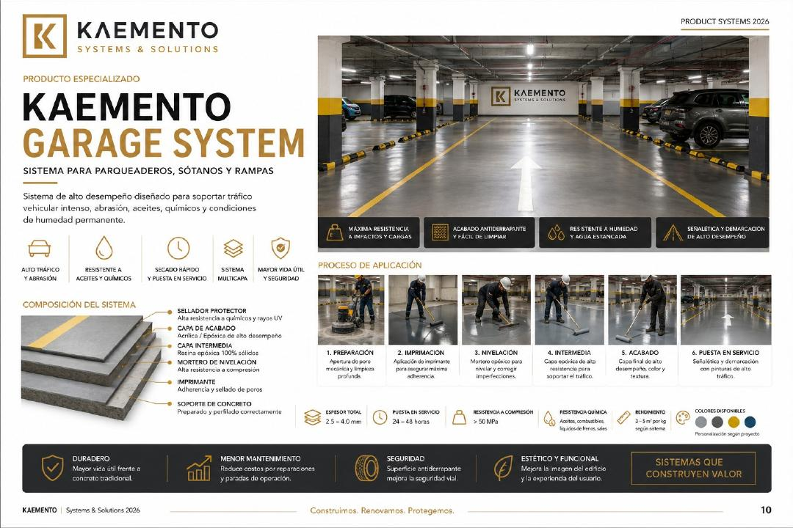
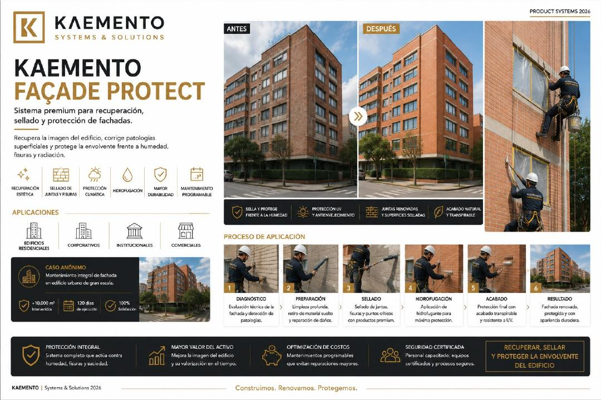
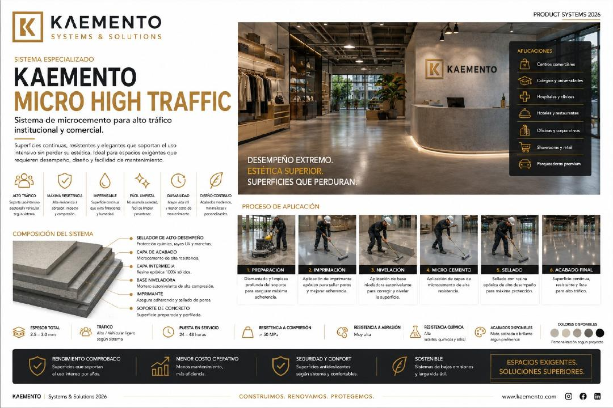
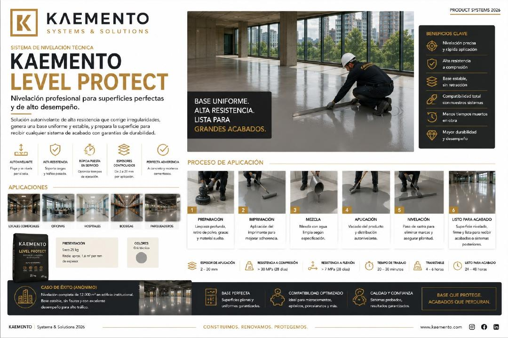
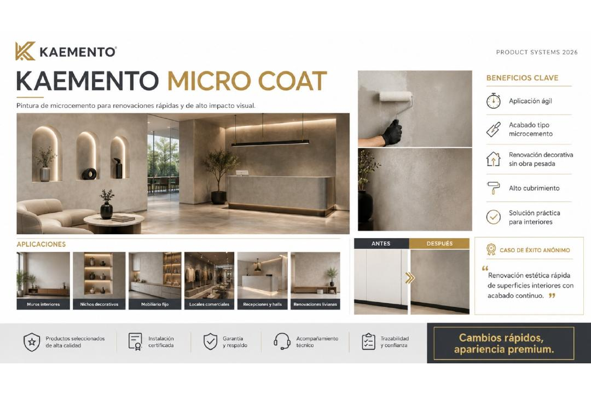

Acabado continuo
Microcemento KAEMENTO
Sistema completo de tres capas, aditivo y sellador final.
Ver producto ↗PORTAFOLIO KAEMENTO
Sistemas prácticos para construir, renovar, reparar y proteger, desarrollados para profesionales y usuarios de bricolaje inteligente.
MENÚ DE PRODUCTOS
Filtre el portafolio por acabados, impermeabilización, juntas o preparación de superficies.

Sistema completo de tres capas, aditivo y sellador final.
Ver producto ↗
Renueva juntas con alta adherencia, impermeabilidad y secado rápido.
Ver producto ↗
Sistema integral para cubiertas, terrazas y jardineras.
Ver producto ↗


Microcemento institucional y comercial de alto desempeño.
Ver producto ↗

Pintura tipo microcemento para renovar muros y espacios interiores.
Ver producto ↗DESDE LA OBRA, PARA LA OBRA
Soportes irregulares, humedad, juntas deterioradas y exigencias de durabilidad impulsan nuestras soluciones. Combinamos experiencia de campo y facilidad de aplicación para reducir reprocesos y complejidad.
Elija el sistema según la superficie, el uso y las condiciones del espacio. Siga siempre la preparación y las instrucciones técnicas; nuestro equipo puede orientar la selección y aplicación.
Consultar mi superficie ↗CATÁLOGO 2026